Reverse engineering - part 2
2020-08-24
After naming the function in the previous post
So I started looking at all the nested function calls and ended up finding a switch statement:
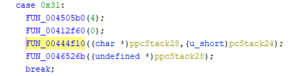
Thanks to the magic of strings, this part was a lot easier to understand than the previous one:
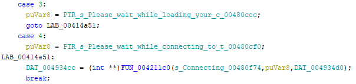
Because it looks a lot like it creates this dialog that is shown when trying to connect to the game server:
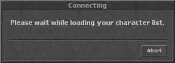
So let's call it
Further down, we find a function that looks like it's used to update the game files, calling it
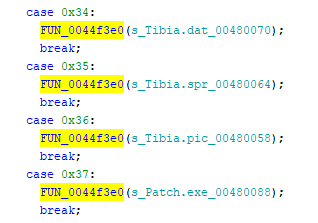
Inside, there's a very clearly assert-like function.
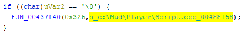
It should come in very handy later on, as it displays valuable information about the surrounding code.
And as an ending to part 2, we find the address of the object that holds the socket created in
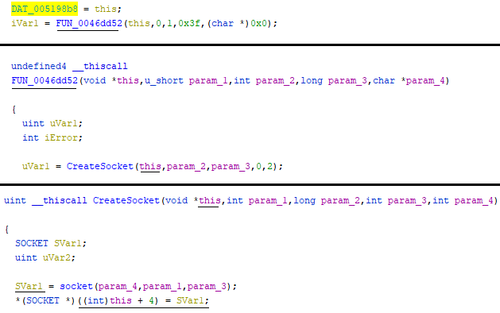
A lot of assumptions have been made at this point, but as the picture gets clearer, we will simply adjust what we got wrong.
No worries.
To be continued in part 3...
CreateSocket, it was time to move on.So I started looking at all the nested function calls and ended up finding a switch statement:
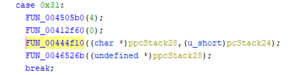
{kind=link}
Thanks to the magic of strings, this part was a lot easier to understand than the previous one:
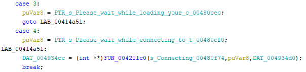
{kind=link}
Because it looks a lot like it creates this dialog that is shown when trying to connect to the game server:
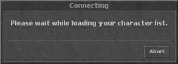
{kind=link}
So let's call it
CreateGameDialog and come back to it later.Further down, we find a function that looks like it's used to update the game files, calling it
Update_PatchFile feels good enough for now.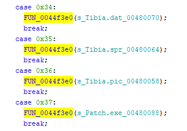
{kind=link}
Inside, there's a very clearly assert-like function.
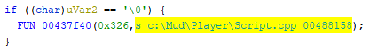
{kind=link}
It should come in very handy later on, as it displays valuable information about the surrounding code.
And as an ending to part 2, we find the address of the object that holds the socket created in
CreateSocket: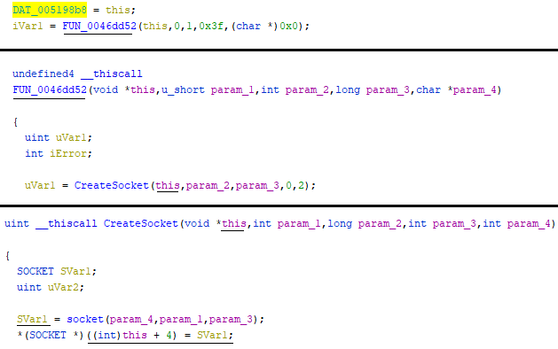
{kind=link}
A lot of assumptions have been made at this point, but as the picture gets clearer, we will simply adjust what we got wrong.
No worries.
To be continued in part 3...